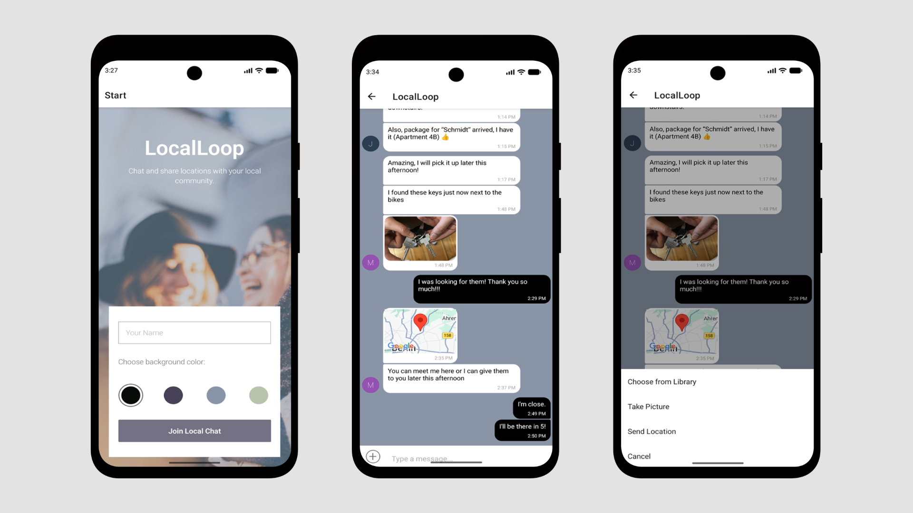

Real-Time Chat
Messages update instantly through Firestore listeners, helping small local groups stay connected without manual refreshes.
A cross-platform mobile chat app for local groups, built with React Native, Expo and Firebase. Users can join with anonymous authentication, exchange real-time messages, share photos and location data, and keep recent conversations available offline through local caching.

Messages update instantly through Firestore listeners, helping small local groups stay connected without manual refreshes.
Recent conversations are cached locally with AsyncStrorage, so users can still read recent updates when their connection drops.
Users can share images from their camera or media library, with uploads stored through Firebase Cloud Storage.
Current location can be shared, previewed on a map, and opened directly in Google Maps.
The app detects network changes with NetInfo and switches between live updates and cached content automatically.
Camera, image library, location, and map features are integrated through Expo and React Native APIs.
Local Loop is built with React Native and Expo, with Firebase handling anonymous authentication, real-time messaging, and media storage. Firestore listeners keep conversations synchronized across devices, while Firebase Cloud Storage stores uploaded images.
The project also focuses on mobile-specific edge cases such as unstable connections, offline access, media uploads, and location sharing. Recent messages are cached locally with AsyncStorage, and NetInfo helps the app respond when the connection changes.
Using Firestore listeners helped me understand the difference between fetching data once and keeping an interface continuously in sync.
Building offline fallback behavior showed me how important it is for mobile apps to remain useful even when the network is unreliable.
Working with camera, image library, and location APIs gave me a better understanding of how React Native connects app logic to real device capabilities.